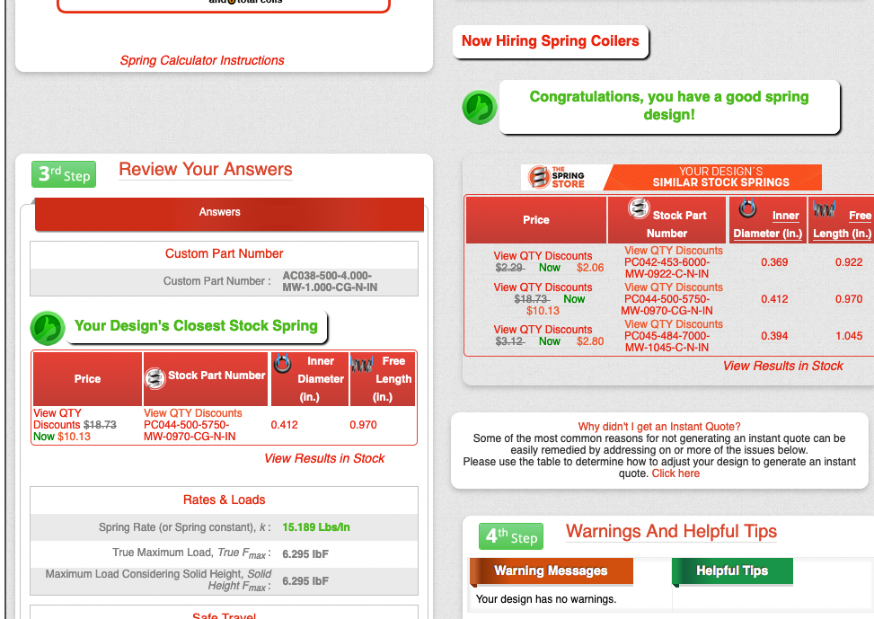

Backlinks
Here's a launcher idea, springs! I was talking to Triple today and thought a little bit about those Physics Elastics Launchers that we used to do experiments with. Other factors nonwithstanding, I think it may actually be reasonable to use a spring-fired projectile system, and here's why.
1 Proving Myself
We are not going to use calculus because that's so 18th century. Instead, we treat everything linearly. Take that, Newton.
\begin{equation} F_{elastic} = -k \Delta x \end{equation} \begin{equation} F_{gravity} = mg \end{equation}1.1 At the point of Launch
Ok I lied, this needs a bit of calculus to proof. But to uphold my honour of "no calclus" I am going to leave that as an exercise to the reader. Think about the spring force as the Height of a right triangle of base \(\Delta x\), and the Work is the area of that triangle.
And of course,
\begin{equation} KE_{translational} = \frac{1}{2}mv^2 \end{equation}We again ignore rotational kinetic energy because its not like I am taking advanced mechanics or something.
So, at launch, we know that our conditions are:
\begin{align} mv^2 =& k\Delta x^2 \\ v^2 =& \frac{k\Delta x^2}{m} \end{align}Hence, given a mass \(m\) (\(kg\)), a spring constant \(k\) (\(\frac{N}{m}\)), and a displacement \(\Delta x\) (\(m\)), we could figure the velocity at which the projectile is going/needs to go.
1.2 To get to the air.
Let's get to 150 metres!
We know that:
\begin{align} PE_{grav} =& mg\Delta h \\ =& 150gm \end{align}To reach this height, we therefore have to contribute \(150gm\) joules worth of energy. To make all of this energy come from moving goodly, we will set that equal to kinetic energy of the object at the start of our experiment.
\begin{align} 150gm =& \frac{1}{2}mv^2 \\ 150g =& \frac{1}{2}v^2 \\ v^2 =& 300g \end{align}1.3 Launch, to Get to the Air
Putting the two together; that we need to "launch with enough velocity to get to the air."
\begin{equation} \frac{k\Delta x^2}{m} = 300g \end{equation}We will need to set \(m=250g=0.25kg\), and \(g=9.8\).
\begin{align} k\Delta x^2 =& 0.25\times300\times9.8 \\ =& 735 \end{align}We will set the solution set, with
\(y=k\) and \(x=x\) — such that, given a distance we wish to stretch the spring, we could figure the spring constant needed.
The graph is available here, and here's a screenshot:

A few noticing.
If we had, say, a typical rubber band (spring constant roughly 40 newtons per meter), the solution set tells us that we have to stretch it by 4 metres.
If we want to stretch/compress it by only a normal length (0.5m), our spring constant has to be roughly 2000 newtons a meter = 11 pounds/inch.
Looks like we could get >11lb/in springs. :tada!:

Here's the URL. So we just have to make a squishy compression thing that squishes the spring down and release all at once.